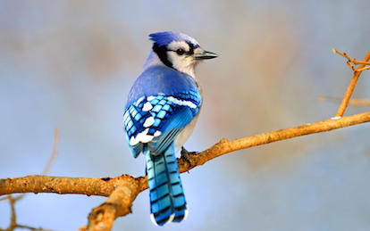
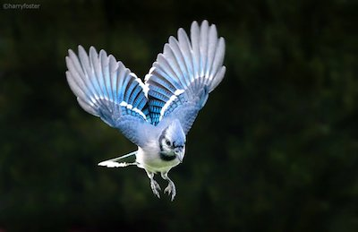

Wow! Based on your answers... You share similarities with the Blue Jay (Cyanocitta cristata)

The Blue Jay is a very nurturing bird but it can surprisingly get quite aggressive. Male and female Blue Jays share the responsibilities of building a nest, feeding and raising their offspring. They mother and father will often stay with their young for the first 2-3 months of their life as they grow feathers and learn how to fly. Blue Jays are loving mates and devoted parents, but if something threatens their nest/offspring, they are not affraid to attack and as a precaution, they often use the calls of hawks to frighten other birds. Like the Blue jay, you can be a gentle and nurturing person, but if the wrong person messes with you or your loved ones you can definetly stand up for yourself.
Click on Ceasar to Restart!